30 looks for animated video, and how to build each one in code that renders the same way twice. Claymation · paper cut-out · shadow puppetry · anime · watercolour · ink · risograph · pixel art · voxel · VHS · neon
Varun Pratap Bhardwaj · github.com/qualixar/brief2mp4 · MIT licence
Ask for "claymation" or "a paper cut-out" and you are asking for a short list of things: how edges look, how light falls, how often the picture changes. This guide writes those lists down for 30 art forms, and shows how to build each one in code that renders the same way every time.
It is a companion to brief2mp4, the skill that turns a written brief into a finished, checked MP4. The skill builds video from web pages: HTML, CSS and GSAP in HyperFrames, canvas, SVG and Three.js. Every art form here has a reference page in the skill and a small demo that is tested in a real browser.
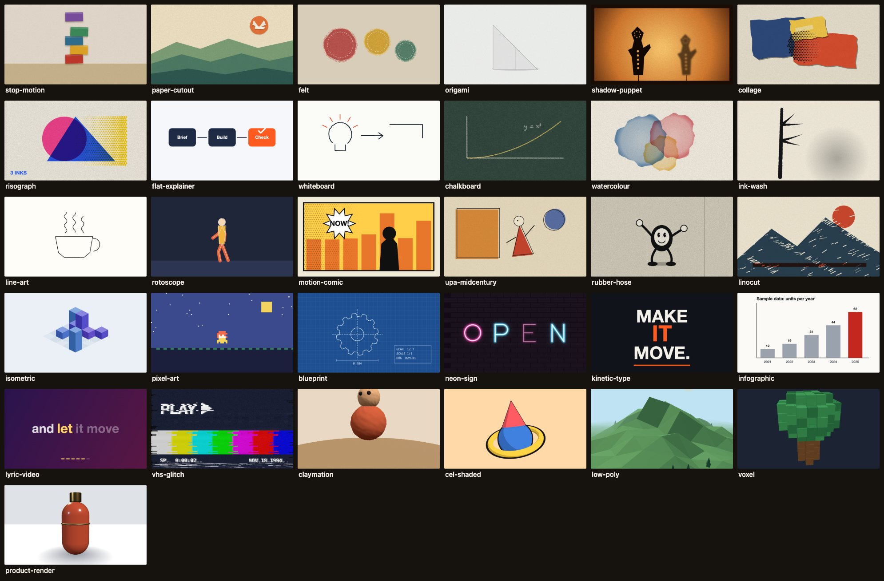
One frame from each of the 31 demos, drawn by the test that checks them.
Family
Art forms
Craft and handmade
Claymation, Stop-motion look, Paper cut-out, Felt and fabric craft, Origami, Shadow puppetry, Collage and mixed media, Risograph and halftone print
Drawn and painted
Anime and cel shading, 2D flat vector explainer, Whiteboard and doodle, Watercolour, Ink wash (sumi-e), Line art, Rotoscope look, Motion comic, UPA and mid-century modern, Rubber-hose cartoon, Linocut and woodcut print
Geometry, pixels and 3D
Isometric, Low-poly 3D, Voxel, Pixel art, 3D product render
Type, data and retro
Kinetic typography, Infographic and data animation, Lyric video, VHS and glitch, Blueprint and technical drawing, Neon sign
The methodbrief2mp4 art forms
Three rules behind every look
A renderer that works frame by frame asks for frame 212, then frame 213, sometimes out of order and on several workers. Three rules make any look survive that.
1. The picture is a function of time
No clock, no timers, no Math.random(). Whatever is on screen at second 4.2 must depend on the number 4.2 and nothing else. Randomness comes from a hash of the frame number or of a position, so it is the same on every run.
export function hash(a, b = 0, c = 0) { // a repeatable number in 0..1 from up to three integers
let n = (Math.imul(a | 0, 374761393) + Math.imul(b | 0, 668265263) + Math.imul(c | 0, 2147483647)) | 0;
n = Math.imul(n ^ (n >>> 13), 1274126177);
return ((n ^ (n >>> 16)) >>> 0) / 4294967295;
}
2. Handmade looks hold their drawings
Film runs at 24 frames a second, but clay, paper and hand-drawn animation are usually shot "on twos": each pose is held for two frames, so the picture changes about 12 times a second. That stepping is most of what makes them read as handmade. Quantise time before posing anything, and leave the video itself at 24 or 30.
export const frameOf = (t, fps) => Math.floor(t * fps + 1e-6); // which drawing we are on
export const held = (t, fps) => frameOf(t, fps) / fps; // time, quantised
const ts = held(t, 12); // "on twos"
// in GSAP the same idea for one tween: gsap.to(el, { x: 400, duration: 1, ease: "steps(12)" })
Clean looks are the opposite: a flat explainer, a low-poly scene, a product render and kinetic type stay smooth at the full frame rate.
3. Imperfection is seeded
Line boil, paper jitter, lamp flicker, misregistered ink and tape damage all come from one line: a small nudge keyed to the drawing number.
export const jit = (frame, i, amount) => (hash(frame, i, 7) - 0.5) * 2 * amount;
const f = frameOf(t, 12);
x += jit(f, partIndex, 1.2); // this part sits 1.2 px off, differently on each drawing, identically on each render
How the demos are checked
A test draws every look in headless Chrome at three moments. The three pictures must differ, none may be blank, and the middle one, drawn a second time after the others, must match itself pixel for pixel. A second test reads the source and fails if a clock, a timer or Math.random appears anywhere in it.
The methodbrief2mp4 art forms
Choosing a look from a brief
If the brief names a look, use it. If it does not, the subject and the mood usually point to one.
The brief is about
Try
Why
children, family, a gentle story
paper cut-out, claymation, felt
handmade textures feel warm and safe
a folk tale, a myth, heritage
shadow puppetry, linocut, ink wash
the form carries the tradition; check the iconography with a source
explaining a product or a process
flat vector explainer, isometric, whiteboard
clean shapes keep attention on the idea
numbers
infographic
the chart is the picture; every number needs a source
a song or a quote
lyric video, kinetic typography
the words are the content
a physical product
3D product render; claymation for a playful take
the object is the hero
nostalgia
VHS and glitch, pixel art, rubber-hose, UPA mid-century
each one is a decade
calm, reflective
watercolour, ink wash, line art
slow, sparse, quiet
loud, independent
risograph, collage, motion comic
print energy and hard cuts
$ python3 plugin/skills/brief2mp4/scripts/art_route.py BRIEF.md
Art form: Shadow puppetry (inferred)
why: a traditional story: the form carries the tradition ("ramayana")
cadence: steps 12 times a second
usual tool: HyperFrames (canvas or SVG)
note: Use Blender for real light through translucent coloured leather.
or: Linocut and woodcut print, Ink wash (sumi-e)
read: references/art-forms/shadow-puppet.md
The router is a keyword scorer, not a judge. One stray word is never enough ("paper" in "paper plane" does not choose paper cut-out), and when nothing fits it says so. An art form sets the look and the timing; the kind of video (explainer, Short, launch) still sets the beats.
Writing the look into the brief
A look becomes checkable when the brief says what should be visible. Two lines are enough:
Look: paper cut-out. Flat layers with a small shadow under each, edges that look cut by hand, paper grain.
Done when: at 4.0 s the frame shows at least three paper layers with shadows; the bird's wings
change at most 12 times a second; nothing moves between drawings.
Assets
Most looks here need no pictures at all: shapes, textures and grain are drawn in code. Where a look needs photographs, footage, a character model or music, use only what you own or may reuse. If you have an image model, it can generate textures and cut-out parts; say in the report that they were generated.
Craft and handmadebrief2mp4 art forms
Craft and handmade
Looks that show the hand: real materials, held drawings, small errors.
Craft and handmade · 12 changes a second · Three.js inside HyperFrames
Claymation
Figures of clay or plasticine, posed and photographed one frame at a time. Soft, lumpy, a little uneven, and never perfectly smooth in motion. Plasticine dates from 1897. Art Clokey (Gumby) and Aardman, founded in 1972, made the look famous.
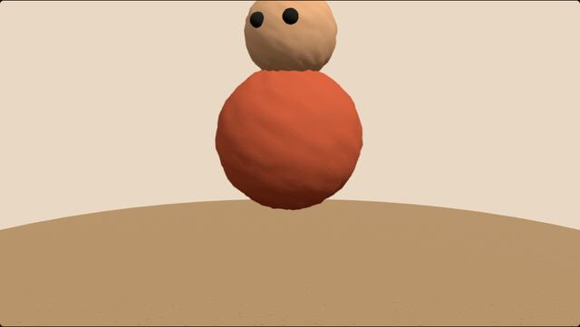
Timing
Shot on doubles: about 12 pose changes a second inside a 24 frames-a-second film. Each held pose sits a hair differently from the last.
Assets
Geometry in code (spheres, capsules, lathes) for simple characters. Fingerprint or noise detail as a generated bump texture. A real character needs modelling.
Sound
Close foley on pose changes (soft thuds, squelches), light percussion. Practice note.
What makes it read as this
Rounded volumes with small lumps and dents, never a perfect sphere
Matte, high-roughness surfaces under soft light
Saturated colour, few of them
Small asymmetries; a silhouette that changes slightly between poses
A miniature set: a floor, a backdrop, shallow depth
What makes it look wrong
Smooth 24 or 30 frames-a-second motion: it reads as CG, not clay
Glossy plastic highlights
Perfect symmetry and clean edges
How to build it
Three.js: MeshStandardMaterial with roughness about 0.9, metalness 0, and a noise canvas as bumpMap
Push each vertex in or out by a few percent with a seeded hash, then computeVertexNormals()
Pose from stepped time: held(t, 12)
Add a seeded nudge per drawing to position and rotation (about 2% of the size)
A hemisphere light plus one soft key; no hard specular highlights
Use Blender when the clay needs real subsurface scattering, soft area-light shadows or sculpted detail.
Craft and handmade · 12 changes a second · HyperFrames (canvas or DOM) or Three.js
Stop-motion look
Any real object moved and photographed a pose at a time. On screen it shows as stepped motion, tiny position errors and light that flickers a little. As old as film: stop tricks appear in the 1890s. Pixilation, cut-out and puppet animation are all forms of it.
Timing
On twos (12 changes a second) is the usual cadence; action sometimes on ones, held moments on threes or more.
Assets
None needed. Everything is procedural.
Sound
Foley that lands on pose changes. A bed that is not too smooth. Practice note.
What makes it read as this
Real materials: wood, card, cloth, plastic
Position jitter of a pixel or two between drawings
Lighting that varies slightly frame to frame
Hard cuts between poses, no in-between blur
What makes it look wrong
Stepping the camera and background together, so everything strobes
Easing between held poses, which defeats the look
Jitter so large the object vibrates
How to build it
Quantise time before anything else: const ts = held(t, 12)
GSAP: ease: "steps(12)" on a one-second tween does the same for a tween
Jitter and flicker keyed to the frame number: jit(frameOf(t, 12), i, 1.2)
Keep the camera and background steady: step the subject, not the world
Craft and handmadebrief2mp4 art forms
Craft and handmade · 12 changes a second · HyperFrames (canvas, SVG or DOM)
Paper cut-out
Flat shapes cut from paper or card, layered, and moved a pose at a time. Parts hinge at joints; nothing bends. Lotte Reiniger's The Adventures of Prince Achmed (1926) is the oldest surviving animated feature. Terry Gilliam's Monty Python animations and the South Park pilot used cut paper.
Timing
Stop-motion cadence, usually on twos. Motion is rotation about joints and sliding, with pops and holds.
Assets
Shapes drawn in code or as SVG. Photo cut-outs need images you own, or generated ones.
Sound
Paper rustle, snips, soft ticks on pose changes. Practice note.
What makes it read as this
Flat fills with hard, slightly uneven cut edges
Layers stacked with a small, tight shadow under each
Rigid parts that rotate about a pivot
Paper grain over everything
A limited, slightly muted palette
What makes it look wrong
Smooth vector motion with no stepping
Perfect edges
Large soft shadows, which look like interface cards, not paper
How to build it
Each part is its own shape; nudge the corners with a seeded hash so edges look cut by hand
Canvas: shadowOffsetY 3 to 4 px with shadowBlur 4 to 5 px per layer. DOM: filter: drop-shadow()
Joints: rotate about a pivot (transformOrigin in GSAP, translate then rotate on a canvas)
Paper grain: a noise texture drawn once and laid over with multiply
SVG route: feTurbulence into feDisplacementMap (scale 2 to 4) roughens an edge
Use Blender for real folded paper with thickness and light passing through it.
Craft and handmade · 12 changes a second · HyperFrames (canvas or SVG)
Felt and fabric craft
Shapes that look needle-felted or sewn: a fuzzy edge of loose fibres, a matte mottled surface, visible stitches. Needle felting tangles wool fibres with barbed needles to make flat pictures and soft figures.
Sourcing note: The craft is well documented; its use in animation is a practice note, not sourced.
Timing
Stop-motion cadence, on twos. Gentle bobbing and nudging.
Assets
Procedural. A felt texture from an image model helps for close-ups.
Sound
Soft, warm, acoustic. Practice note.
What makes it read as this
A halo of short fibres along every edge
Matte, slightly mottled colour
Stitches: a dashed line just inside the edge
Chunky, simple forms in wool colours
What makes it look wrong
Crisp vector edges
Flat plastic colour
No fibre fuzz
How to build it
Draw the shape, then several hundred short strokes outward from its edge, each angled by a seeded hash
Stitches: setLineDash([9, 7]) on a path just inside the edge (SVG: stroke-dasharray)
Mottle: a grain texture clipped to the shape with multiply
SVG route: high-frequency feTurbulence (0.8 to 1.2) with displacement scale 3 to 6 on the edge
Use Blender hair or fur for real fibre fuzz on 3D figures.
Craft and handmadebrief2mp4 art forms
Craft and handmade · smooth · HyperFrames (canvas or SVG), or Three.js
Origami
Paper folded from a flat sheet: sharp creases, flat facets, each fold a clean move followed by a pause. Japanese paper folding. Modern computational origami works from crease patterns.
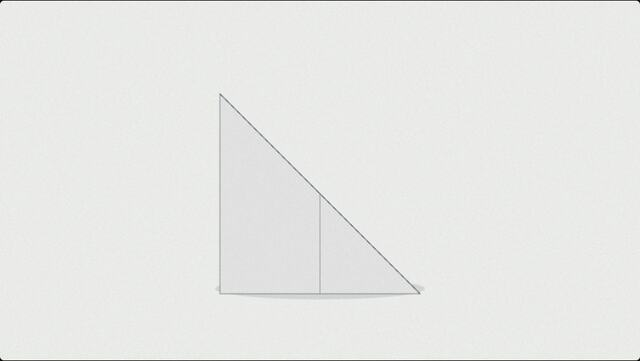
Timing
Folds are eased moves of about 0.8 seconds with a short hold after each. Smooth, not stepped.
Assets
Geometry in code. A faint paper grain.
Sound
Light paper crinkle on each fold, soft piano or music box. Practice note.
What makes it read as this
Sharp mountain and valley creases
Flat facets, each shaded as one plane
Paper coloured on one side, white on the other
Soft, even light so the creases read
What makes it look wrong
Faces passing through each other
Folding with no hold, so the eye cannot follow
Light that hides the creases
How to build it
2D: a fold is a point travelling across the crease; draw the moving flap from the crease to that point
Shade the flap by its angle, and swap to the paper's other colour past 90 degrees
3D: flat-shaded polygons, child groups rotating about the crease axis
An orthographic camera gives a diagram-clean view
Use Blender when the paper has to bend or show thickness.
Craft and handmade · 12 changes a second · HyperFrames (canvas or SVG)
Shadow puppetry
Flat figures held between a lamp and a cloth screen: dark silhouettes with punched patterns on a warm, glowing field. An old tradition across Asia. Ravana Chhaya of Odisha uses uncoloured deerskin puppets with no joints; wayang kulit of Java and Bali was recognised by UNESCO in 2003. Lotte Reiniger brought silhouettes to film.
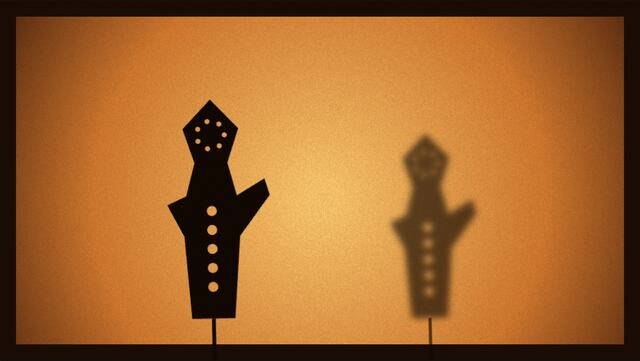
Timing
Live puppets move continuously on rods; film versions are stop-motion, so use twos. Stiff, deliberate moves; no squash and stretch.
Assets
Simple figures in code. Ornate traditional figures need drawing or tracing with care.
Sound
Narrator, singers and percussion in the tradition: cymbals and drums for Ravana Chhaya, gamelan for wayang.
What makes it read as this
Black silhouettes on a warm lit screen, never on white
Interior detail made of perforations: rows of holes and cut patterns
A lamp that flickers
The shadow softens and grows as the puppet moves away from the screen
Rods visible below the figures
What makes it look wrong
Black on white, which loses the lamp
Smooth modern vector motion
Careless drawings of sacred figures: check the iconography with a source
How to build it
One path per puppet filled with the even-odd rule, so holes are part of the figure
Screen: a radial gradient from warm yellow to deep brown
Flicker: scale the lamp brightness by a seeded value per drawing
Distance from the screen: filter: blur() growing with distance, and lower opacity
Ravana Chhaya style: no joints, move and tilt the whole puppet. Wayang style: hinge the arms
Use Blender for real light through translucent coloured leather.
Craft and handmadebrief2mp4 art forms
Craft and handmade · 8 changes a second · HyperFrames (canvas or DOM)
Collage and mixed media
Pieces of different papers, photographs and print stuck together: mismatched scale and texture, torn edges, hard shadows. From the French coller, to glue. Braque and Picasso brought it into modern art around 1912; Dada followed with photomontage.
Timing
On twos or threes. Pieces pop into place on the beat with a small rotation, then hold.
Assets
Paper textures in code. Photo fragments need images you own, or generated ones.
Sound
Bright percussive music, staccato effects on each pop. Practice note.
Torn edge: walk the outline of a rectangle and nudge every point with a seeded hash
Hard shadow: shadowBlur: 0 with an offset of 5 to 6 px
Halftone a photo: dots on a staggered grid sized by brightness
Entrance: scale from 1.25 to 1 with a quarter-turn of rotation over a quarter of a second
Craft and handmade · 8 changes a second · HyperFrames (canvas or DOM)
Risograph and halftone print
The look of a cheap stencil print: two to four bright inks laid over each other, visible grain, dot screens, and layers that never quite line up. The Risograph duplicator dates from 1980: one ink per drum, so each colour is a separate pass. Halftone dots go back to the 1860s.
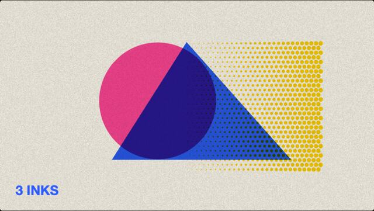
Timing
Print is still. Animate by re-rolling the misregistration and swapping the grain 8 to 12 times a second.
Assets
All procedural. A chunky sans or slab typeface.
Sound
Lo-fi, tape hiss. Practice note.
What makes it read as this
Two to four spot colours, often pink, blue and yellow
Inks overprint to make new colours (multiply)
Each layer sits a pixel or two off register
Grain and dot screens; no smooth gradients
Off-white paper
What makes it look wrong
Gradients
Perfect registration
More than four colours
How to build it
Each ink is its own layer drawn with mix-blend-mode: multiply (canvas: globalCompositeOperation)
Offset each layer by a seeded amount per drawing: jit(frameOf(t, 8), layer, 3)
Tone as dots: a staggered grid of circles whose radius follows the tone
Grain: several pre-made noise tiles, cycled by frame number
Three.js HalftonePass exists for 3D scenes; SVG feColorMatrix separates a photo into one ink
Drawn and paintedbrief2mp4 art forms
Drawn and painted
Looks made of line and paint, from cel animation to ink on paper.
Drawn and painted · 12 changes a second · Three.js inside HyperFrames
Anime and cel shading
Light broken into two or three flat tones with a hard edge between them, and an ink outline around every form. Named after the celluloid sheets of hand-drawn animation. In 3D it became toon shading, as in Jet Set Radio and The Wind Waker.
Timing
On twos as the baseline, ones for key action, threes and holds for dialogue.
Assets
The gradient map is three bytes. Characters need modelling or generated models.
Sound
Whoosh and impact effects on key poses. Practice note.
Three.js MeshToonMaterial with a gradientMap: a three-texel DataTexture with NearestFilter, so light snaps to bands
Outline by inverted hull: a second copy of each mesh, slightly larger, drawn back faces only in black
OutlineEffect and SobelOperatorShader in the three.js examples are the two other routes
Step the pose time: held(t, 12)
2D: flat SVG shapes, a thick outline, steps() timing
Use Blender for Freestyle line art and shader-to-RGB ramps on real characters.
Drawn and painted · smooth · HyperFrames (DOM, SVG)
2D flat vector explainer
The plain explainer look: flat fills, a few colours, simple shapes and icons, smooth eased motion. Flat design comes from Swiss style and modernism; in animation its ancestor is the stylised, limited look of the UPA studio.
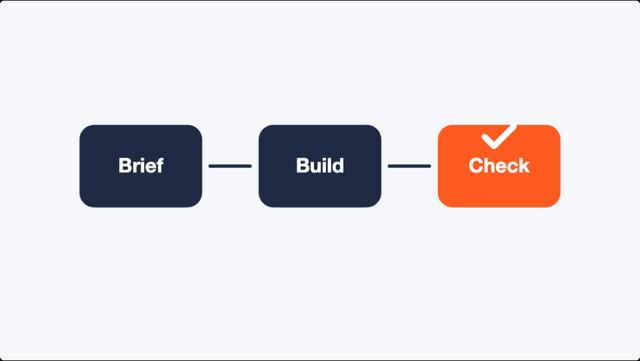
Timing
Smooth ease-out moves of 0.4 to 0.8 seconds, staggered, with holds long enough to read.
Assets
All in code.
Sound
Soft interface blips, a light bed, voice-led pacing. Practice note.
What makes it read as this
Flat fills, three to five colours, one accent
Geometric shapes with one stroke width
Plenty of space; one idea per frame
Clean sans type
What makes it look wrong
A grid of identical cards
Gradients and shadows creeping in
Too much on screen at once
How to build it
HTML or SVG with GSAP: this is what HyperFrames is best at
Stagger related items 0.15 to 0.25 seconds apart
Draw check marks and connectors on with stroke-dashoffset
Move a highlight instead of cutting
Drawn and paintedbrief2mp4 art forms
Drawn and painted · 10 changes a second · HyperFrames (canvas or SVG)
Whiteboard and doodle
Marker lines that draw themselves on a white board, in the order someone would draw them. The chalkboard is the same recipe, inverted. Also called video scribing. A 2016 study found little evidence that it teaches better than other formats, so use it for its tone, not as a learning trick.
Timing
Each element draws on over 0.3 to 1.5 seconds, paced to the narration. The line boils at about 10 changes a second.
Assets
All in code. A marker or chalk typeface if the system has one.
Sound
Marker squeak, voice-led. Practice note.
What makes it read as this
Black marker lines with a slight wobble
Strokes appear in drawing order
One or two accent colours
Chalk variant: a dark board, dusty broken strokes, a little smudge
What makes it look wrong
Perfect vector lines
A hand that covers the drawing
Paragraphs of text
How to build it
Draw-on: a polyline drawn up to a fraction of its length (SVG: stroke-dashoffset)
Boil: nudge every point by a seeded amount keyed to frameOf(t, 10)
Chalk: three thin passes of the same stroke with different dash patterns at half opacity, over a speckled board
rough.js (MIT) generates sketchy shapes and hatching to animate afterwards
Drawn and painted · 12 changes a second · HyperFrames (canvas or SVG)
Watercolour
Transparent washes on textured paper: colour that spreads, pools darker at its edge, and lets the paper show through. Pigment in water on paper. Wet-on-wet blends softly; wet-on-dry gives crisp edges.
Sourcing note: The edge-darkening rule is a practice note; the technique sources cover the filter, not the look.
Timing
Slow. A wash grows over 1 to 3 seconds with an ease-out. Hold drawings at 12 a second for a hand-painted feel.
Assets
Procedural. A scanned paper texture improves close-ups.
Sound
Slow, gentle, acoustic. Practice note.
What makes it read as this
Transparent colour; overlaps make new colours
Darker pigment at the edge of each wash
Irregular, soft outlines
Paper grain visible everywhere
Unpainted paper as the highlight
What makes it look wrong
Opaque flat colour
A uniform blur, which looks out of focus, not painted
No paper texture
How to build it
Each wash: an irregular closed outline, clipped, filled with a radial gradient that is darkest near the rim
Layer washes with multiply
Paper grain over everything with multiply
SVG route: low-frequency feTurbulence (0.01 to 0.03) into feDisplacementMap (scale 10 to 25) for bleeding edges
3D: a Kuwahara filter as a custom pass gives a painterly result; three.js ships none
Drawn and paintedbrief2mp4 art forms
Drawn and painted · 12 changes a second · HyperFrames (canvas or SVG)
Ink wash (sumi-e)
Black ink in every shade from deep black to pale grey, laid down in tapered brush strokes on rice paper, with a great deal left empty. Chinese ink wash painting from the Tang dynasty, carried to Japan by Zen monks. Shanghai Animation Film Studio made ink-wash films from 1960.
Timing
Slow and fluid. A stroke accelerates and lifts. On twos.
Assets
Procedural. Rice-paper grain.
Sound
Sparse: flute, single plucked notes, silence. Practice note.
What makes it read as this
One ink, many dilutions
Strokes that taper from thick to a point
Empty paper as part of the picture
One small red seal
Soft grey washes behind sharp strokes
What makes it look wrong
Pure black on pure white
Uniform stroke width
Filling the frame
How to build it
A stroke is a row of overlapping dots whose radius tapers along its length, drawn up to a fraction
Vary each dot's opacity with a seeded hash for a dry-brush break
Washes: soft radial gradients with multiply
SVG route: variable-width filled paths revealed by a mask
Drawn and painted · 10 changes a second · HyperFrames (SVG or canvas)
Line art
One weight of line on a plain ground, no shading: the drawing draws itself, then quivers slightly as if redrawn each frame. Drawing with line alone, where tone comes only from hatching or stippling.
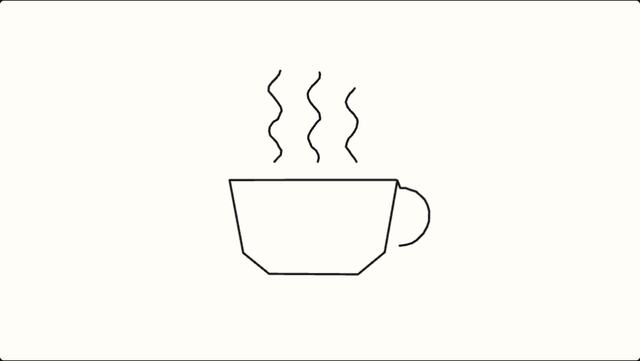
Timing
Draw-on over 1 to 2 seconds, then a boil at 8 to 12 changes a second.
Assets
All in code.
Sound
A pencil or pen sound under the draw-on. Practice note.
What makes it read as this
A constant or tapered stroke with round ends
No fills, or one flat tone
Plenty of empty space
One accent colour at most
What makes it look wrong
Jitter so strong the line turns to noise
Filters that re-run on a large area every frame and slow the render
How to build it
Draw-on with stroke-dashoffset (canvas: a polyline to a fraction of its length)
Boil: a seeded nudge of 1 to 2 px per point, keyed to the frame number
SVG route: feTurbulence with seed set from the frame number, into feDisplacementMap (scale 1.5 to 3)
vector-effect: non-scaling-stroke keeps the weight when scaled
Drawn and paintedbrief2mp4 art forms
Drawn and painted · 12 changes a second · HyperFrames (canvas over video)
Rotoscope look
Real movement traced by hand: lifelike motion, flat colour fields that drift, and an outline that shimmers. Max Fleischer built the rotoscope. A Scanner Darkly, Waking Life and the a-ha video for Take On Me are the well-known examples.
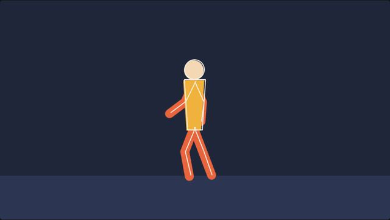
Timing
Every frame or on twos. The boil is keyed to the drawing.
Assets
Footage you own, or a figure built in code.
Sound
The original scene audio, or music-led. Practice note.
What makes it read as this
Motion with the timing of live action
Flat or posterised colour fields
Outlines that change slightly every drawing
Colour that sits a little off the line
What makes it look wrong
Edge noise that flickers out of control
Losing the subject in the treatment
Tracing footage you have no right to use
How to build it
From footage: draw each video frame to a canvas, posterise it, find edges (three.js has SobelOperatorShader), then nudge the edges per drawing
From code: a figure built from joints, drawn twice: thick flat colour offset by a seeded amount, then a thin outline with its own nudge
Re-encode source video with a keyframe on every frame so seeking is exact
Dedicated tools do true painterly rotoscoping better than a browser.
Drawn and painted · smooth · HyperFrames (DOM or canvas)
Motion comic
Comic panels brought to life: layers inside a panel slide at different speeds under a slow camera move, then a hard cut to the next panel. Watchmen: Motion Comic (2008) is the usual first example.
Sourcing note: Pan-and-zoom staging is a practice note; the source describes the format, not the technique.
Timing
Slow pushes and pans of 2 to 4 seconds, hard cuts between panels, a pop for a burst.
Assets
Drawn panels in layers. Artwork needs an illustrator or generated images cut into layers.
Sound
Voice, music and effects carry it. Practice note.
What makes it read as this
Ink outlines, flat colour, halftone shading
A panel border
Foreground, figure and background on separate layers
Bursts and lettering as graphic elements
What makes it look wrong
A slow zoom on one flat image, which reads as a slideshow
No separation between figure and background
How to build it
Layers in a clipped panel; move far layers less than near ones
A slow scale from 1 to about 1.07 on the whole panel
Halftone shading: dots that shrink across the tone
Cut to the next panel by switching the scene at a time, not by cross-fading
Drawn and paintedbrief2mp4 art forms
Drawn and painted · 8 changes a second · HyperFrames (canvas, SVG)
UPA and mid-century modern
Flat, stylised design from 1950s cartoons: geometric characters, abstract backgrounds, colour printed slightly off its outline, and very few drawings. United Productions of America turned away from Disney realism and made limited animation a style. Gerald McBoing-Boing won an Academy Award in 1950.
Timing
Limited animation: a pose is held, then pops to the next. Eight or fewer changes a second.
Assets
All in code.
Sound
Jazz combo, sound effects as music. Practice note.
What makes it read as this
Characters built from triangles, circles and lines
Flat colour blocks that do not meet their outlines
Abstract backgrounds: a few shapes, no perspective
A warm, muted palette
What makes it look wrong
Smooth, fluid motion
Gradients and realistic light
How to build it
Flat shapes; draw the outline 6 to 9 px away from the fill
Two or three poses, switched on a frame count with no in-betweens
Paper grain with multiply
Drawn and painted · 12 changes a second · HyperFrames (canvas, SVG)
Rubber-hose cartoon
The 1920s cartoon: limbs like hoses with no elbows or knees, round bodies that bounce to the music, black and white film. Credited to Bill Nolan on Felix the Cat. The Fleischer studio kept it longest; Cuphead revived it.
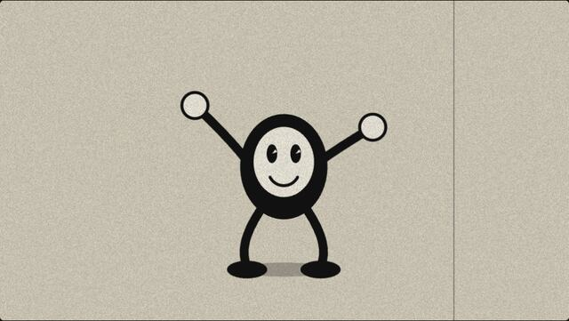
Timing
Bouncy loops locked to the music, on twos, with squash and stretch.
Assets
All in code. Original characters only.
Sound
Hot jazz, slide whistles, effects on every bounce. Practice note.
What makes it read as this
Curved tubular limbs
Round forms
Black and white or sepia, high contrast
Film grain, scratches and a frame that weaves slightly
Everything moves to the beat
What makes it look wrong
Stiff jointed limbs
Clean modern gradients
Copying characters that are still under copyright
How to build it
A limb is a quadratic curve between two points; move the control point to bend it
Squash and stretch: scale the body on one axis by the inverse of the other
Grain: cycle a few noise tiles by frame; gate weave: shift the whole picture by a seeded pixel or two
Sepia with feColorMatrix if wanted
Drawn and paintedbrief2mp4 art forms
Drawn and painted · 8 changes a second · HyperFrames (canvas, SVG)
Linocut and woodcut print
A relief print: bold flat shapes in one to three inks, with white gouge marks where the block was carved. Carved in linoleum or wood; the uncut surface prints. Each colour is a separate block.
Sourcing note: The source covers the technique; the visual rules are practice notes.
Timing
Each colour arrives as a pull, top to bottom, then holds. On twos or slower.
Assets
All in code.
Sound
A roller, a press, paper lifting. Practice note.
What makes it read as this
Bold shapes, no fine detail
Short white cut marks inside the ink, all leaning one way
One to three inks, laid slightly off register
Paper showing at the edges
What makes it look wrong
Gradients
Thin delicate lines
Too many colours
How to build it
Draw each block to its own canvas, then cut marks out of it: short strokes with destination-out
Print blocks over each other with multiply, the second one offset a few pixels
Reveal a block by widening a clip from the top
SVG route: feTurbulence through a hard threshold makes rough voids
Geometry, pixels and 3Dbrief2mp4 art forms
Geometry, pixels and 3D
Looks built from blocks, facets and pixels, and the clean studio shot.
Geometry, pixels and 3D · smooth · HyperFrames (canvas, SVG) or Three.js
Isometric
A parallel projection seen from above at an angle: no perspective, three visible faces per block, a tidy model world. A technical drawing projection. Games use a 2:1 pixel slope, about 26.6 degrees, which is strictly dimetric.
Timing
The camera does not orbit. Objects drop, stack and slide along the three axes, staggered by grid position.
Assets
All in code.
Sound
Soft clicks as pieces land. Practice note.
What makes it read as this
No perspective: parallel lines stay parallel
Three tones per object: top lightest, one side mid, one side darkest
One light direction for everything
A grid floor
What makes it look wrong
A perspective camera by accident
Shadows that disagree with the light
Uneven block heights
How to build it
2D: x = (gx - gy) * s, y = (gx + gy) * s / 2 - gz * s; draw the two side faces, then the top
Sort by gx + gy, then by height, so nearer cubes cover farther ones
Three.js: an OrthographicCamera placed at equal x, y and z looking at the origin
CSS: rotateX(60deg) rotateZ(-45deg) on a flat layer
Use Blender for bevelled, ambient-occluded isometric scenes.
Geometry, pixels and 3D · smooth · Three.js inside HyperFrames
Low-poly 3D
Meshes with few polygons, each face lit as one flat facet. A hardware limit that became a style. From the era of early 3D consoles; chosen on purpose since about 2013.
Timing
Clean, so smooth: slow eased orbits and dollies at the full frame rate.
Assets
Geometry in code for landscapes and props. Characters need modelling.
Sound
Calm, spacious. Practice note.
What makes it read as this
Visible facets, flat shaded
A limited, saturated palette
Simple lighting and a gradient or flat sky
Chunky silhouettes
What makes it look wrong
Smooth normals, which erase the facets
Detailed textures that fight the flat colour
How to build it
Low segment counts and flatShading: true on MeshStandardMaterial
Displace a plane's vertices with a seeded hash for terrain, then computeVertexNormals()
A hemisphere light plus one directional key; fog in the sky colour for depth
Camera position from t directly
Use Blender for modelling and baked light.
Geometry, pixels and 3Dbrief2mp4 art forms
Geometry, pixels and 3D · 12 changes a second · Three.js inside HyperFrames
Voxel
Everything built from cubes of one size on a grid, like a three-dimensional pixel picture. A voxel is a value on a 3D grid. Minecraft made the look familiar.
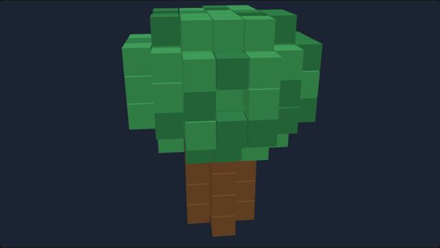
Timing
On twos. Things appear cube by cube or layer by layer; moves snap to the grid.
Assets
Models as arrays in code, or made with a voxel editor.
Sound
Blocky, percussive, chiptune. Practice note.
What makes it read as this
One cube size, integer positions
Each face one flat tone
A small palette
Small floating scenes
What makes it look wrong
Cubes at non-integer positions
Faces flickering where cubes touch at full size
How to build it
One InstancedMesh of a box for all the cubes: one draw call
Set each cube's matrix from stepped time; hide a cube by scaling it to nothing
Cubes slightly under size (0.96) so the seams read
MeshLambertMaterial and a hemisphere light
Geometry, pixels and 3D · 8 changes a second · HyperFrames (canvas)
Pixel art
A tiny picture placed pixel by pixel and scaled up with hard edges: a few colours, no blur, sprites that step. From early video games; the term dates from 1982.
Timing
Walk cycles of 4 to 8 frames at about 8 a second. Scrolling moves in whole pixels.
Assets
Sprites as data in code, or drawn in a pixel editor.
Sound
Chiptune. Practice note.
What makes it read as this
A small canvas scaled by a whole number
A limited palette, often 8 to 32 colours
No anti-aliasing, no soft gradients
Sprites animate in a few frames
What makes it look wrong
Scaling by a fraction
Mixed pixel sizes on one screen
Smooth vector edges or too many colours
How to build it
Draw on a small canvas (160 by 90), then drawImage it up with imageSmoothingEnabled = false
CSS: image-rendering: pixelated on an upscaled canvas
Sprites as arrays of palette indexes
Three.js: RenderPixelatedPass renders a 3D scene to low resolution with nearest filtering
Geometry, pixels and 3Dbrief2mp4 art forms
Geometry, pixels and 3D · smooth · Three.js, the 3D pack, or Blender
3D product render
A studio shot of an object: a seamless backdrop, soft key, fill and rim lights, controlled reflections, a slow turn. Product photography lighting, done in 3D.
Sourcing note: The lighting source is about photography; applying it to rendering is a practice note.
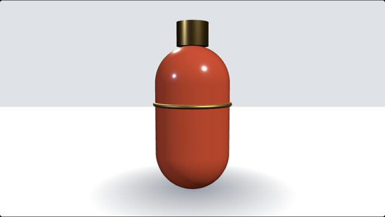
Timing
Smooth and slow at the full frame rate. The opposite of the handmade looks.
Assets
A model of the product: built in code, made with the 3D pack, or supplied.
Sound
Minimal: a low bed and one accent on the reveal. Practice note.
What makes it read as this
A seamless backdrop
Key light to one side and above, a softer fill opposite, a rim light behind
A contact shadow under the object
True materials: gloss, metal, glass
One slow move
What makes it look wrong
No reflections, so it looks like plastic
One harsh light
An object floating with no shadow
How to build it
MeshPhysicalMaterial with clearcoat for lacquer, metalness: 1 for metal
Three directional lights in the key, fill and rim positions, plus a hemisphere light
Contact shadow: a plane with a radial-gradient texture, depthWrite: false
Rotation from t directly; ease the camera, not the turntable
Use Blender when the brief asks for photoreal glass, caustics or depth of field.
Type, data and retrobrief2mp4 art forms
Type, data and retro
Looks where words, numbers or the recording medium are the picture.
Type, data and retro · smooth · HyperFrames (DOM)
Kinetic typography
Moving words as the whole picture: scale, weight and timing carry the meaning. Saul Bass's title sequences for North by Northwest (1959) and Psycho (1960) made it a form.
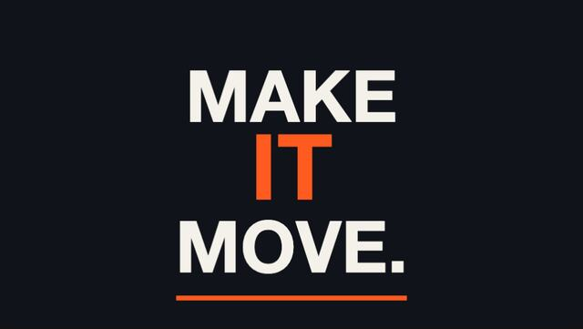
Timing
Each word lands in 0.3 to 0.5 seconds with a small overshoot, then the line holds long enough to read.
Assets
A typeface with enough weights. No pictures.
Sound
Cut to the voice or the beat. Practice note.
What makes it read as this
Type is the image; nothing competes with it
Strong contrast of size and weight
Words arrive in reading order, on the beat
One idea per frame
What makes it look wrong
Words faster than they can be read
Effects that add no meaning
Everything moving at once
How to build it
HyperFrames: split text into inline-block spans and stagger with GSAP
Canvas: fillText with a transform per word
Timing from the narration: one start time per word
Hold for (words / 3) + 0.5 seconds before the next line
Type, data and retro · smooth · HyperFrames (SVG, canvas)
Infographic and data animation
A chart that builds in a sensible order: axes, then the data from an honest baseline, then the exact values. From Playfair's first charts in 1786 to animated infographics in music videos in 2002.
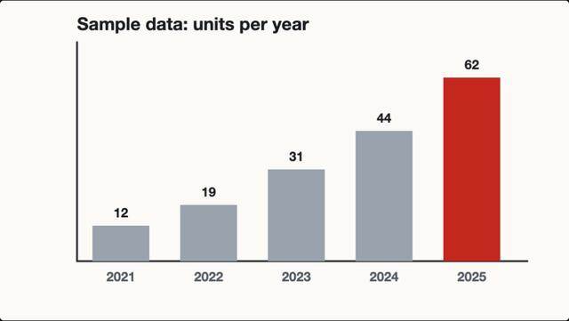
Timing
Axes in about half a second, each series over 0.8 to 1.5 seconds with an ease-out, then a hold to read.
Assets
The data, with its source.
Sound
A tick or tone per value, a bed that stays out of the way. Practice note.
What makes it read as this
One chart type that fits the data
Direct labels, not a legend
An honest axis: bars start at zero
One colour for the point being made
What makes it look wrong
Numbers that were not checked
3D bars
An axis cut off to exaggerate a difference
How to build it
Drive the chart from one time value; never use a chart library's own transitions
Bars grow from the baseline; counters show the rounded value as it grows and end on the exact figure
SVG or canvas with scale maths; D3 scales are enough
Every number needs a source in the brief
Type, data and retrobrief2mp4 art forms
Type, data and retro · smooth · HyperFrames (DOM, canvas)
Lyric video
The words of a song as the main image, each line timed to the vocal and the active word lit. Lyric text appears in music videos from the 1980s; the format took off on video sites in the 2010s.
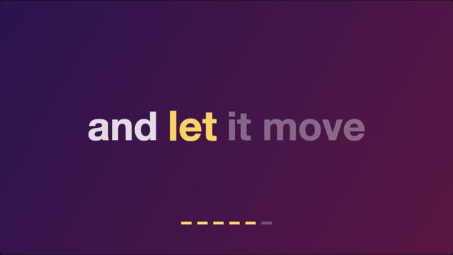
Timing
Locked to the music. A word changes exactly on its beat; a few frames late is visible.
Assets
The audio, with the right to use it, and its word timings.
Sound
The song.
What makes it read as this
Three to eight words on screen
The word being sung is brighter or larger
A background that never fights the text
One typographic system for the whole song
What makes it look wrong
Timing that drifts
Text over a busy background
Music you have no licence for
How to build it
Word start times from forced alignment or a beat grid
Compute the active line and word from t
A pulse from the beat phase: 1 - (beat % 1) drives scale and background
Measure words first so the line is centred
Type, data and retro · 30 changes a second · HyperFrames (canvas) or Three.js post-processing
VHS and glitch
The damage of old tape and broken data: colour that bleeds sideways, scan lines, a band of noise at the bottom, sudden torn slices. VHS records colour at far lower resolution than brightness, which is why colour smears. Glitch art uses such errors on purpose.
Timing
Full frame rate, with bursts of a fifth of a second. Seeds come from the frame number so every render matches.
Assets
All in code.
Sound
Tape hiss, hum, a click on each burst. Practice note.
What makes it read as this
Colour offset from brightness by a few pixels and softer
Scan lines
A tracking band of noise near the bottom
A date stamp in a blocky face
Glitch: slices displaced sideways, in short bursts
What makes it look wrong
Constant glitching, which tires the eye
Glitching text the viewer has to read
Unseeded randomness, so two renders differ
How to build it
Draw the clean frame to its own canvas first, then the damage on top
Redraw it in thin horizontal strips with a per-strip offset; large offsets only during a burst
Chroma bleed: a blurred copy drawn again a few pixels to the side with screen
Scan lines: a dark row every third pixel
Three.js: FilmPass, RGBShiftShader and GlitchPass exist; GlitchPass picks its own random timing, so check it repeats before relying on it
Type, data and retrobrief2mp4 art forms
Type, data and retro · smooth · HyperFrames (SVG, canvas)
Blueprint and technical drawing
White lines on blue: a grid, an object drawn in outline, centre lines, dimensions and a title block. The blueprint is a cyanotype copy of an engineering drawing, introduced in 1842: white lines on blue.
Timing
Steady: lines draw on, then dimensions and labels fade in. No bounce.
Assets
All in code.
Sound
A pen plotter, a pencil. Practice note.
What makes it read as this
White or pale lines on a deep blue
A faint grid
Dashed centre lines, dimension lines with end ticks
A title block in a monospace face
What makes it look wrong
A neon blue
Labels that say nothing
Perspective in the drawing
How to build it
Grid: thin lines every 30 px at low opacity (CSS: repeating-linear-gradient)
Draw-on with stroke-dashoffset or a partial polyline
Dashed centre lines with setLineDash
Dimension lines: a line, two end ticks and a centred label
Type, data and retro · 24 changes a second · HyperFrames (canvas, SVG)
Neon sign
Glass tubes bent into letters and lit: a bright core, a coloured glow, a dark wall, tubes that light one by one and sometimes flicker. Glass tubing filled with gas and lit by electrodes; sections can be switched in sequence.
Timing
Tubes come on in order with a short stutter each; now and then one dims for a frame.
Assets
Letter paths in code. A brick or plaster texture can be drawn.
Sound
A low electrical hum, a tick as each tube lights. Practice note.
What makes it read as this
One continuous line per letter, one width
A white-hot core inside a coloured halo
A dark wall behind
Letters light in sequence
What makes it look wrong
A glow so wide the word cannot be read
Filled letters instead of a single tube
Flicker that differs between renders
How to build it
Each tube is drawn three times: a wide faint stroke, a medium one, a thin white core, all with shadowBlur
Add them with the lighter blend (CSS: mix-blend-mode: plus-lighter or screen)
Flicker from hash(frame, tube), never from a random call
Three.js: UnrealBloomPass for bloom on emissive geometry
Referencebrief2mp4 art forms
Tools that exist, by name
Where
What
Used for
SVG filter
feTurbulence
noise: grain, the source for every rough edge
SVG filter
feDisplacementMap
bend a shape by that noise: cut edges, line boil, ink bleed
SVG filter
feMorphology
thicken or thin: outlines
SVG filter
feColorMatrix, feComponentTransfer
recolour, threshold, separate one ink, sepia
CSS
steps()
held drawings in a CSS animation
CSS
mix-blend-mode: multiply
ink printed over ink, paper grain over everything
CSS
mix-blend-mode: screen, plus-lighter
glow that adds up: neon, chroma bleed
CSS
image-rendering: pixelated
pixel art scaled with hard edges
Canvas
globalCompositeOperation
the same blends on a canvas, and destination-out to cut marks out of a shape
Canvas
fill("evenodd")
holes that are part of a figure: shadow puppets
GSAP
ease: "steps(n)"
held drawings in a tween
Three.js
MeshToonMaterial with a gradientMap
light in hard bands: cel shading
Three.js
a second mesh, larger, back faces only
an outline (the inverted hull); OutlineEffect packages it
post-processing for print, pixel, tape and glow looks
Three.js ships no watercolour pass and no VHS pass: both are built from the pieces above. Its GlitchPass chooses its own random timing, so check that it repeats before relying on it in a render.
When Blender is the better tool
Claymation: Use Blender when the clay needs real subsurface scattering, soft area-light shadows or sculpted detail.
Paper cut-out: Use Blender for real folded paper with thickness and light passing through it.
Felt and fabric craft: Use Blender hair or fur for real fibre fuzz on 3D figures.
Origami: Use Blender when the paper has to bend or show thickness.
Shadow puppetry: Use Blender for real light through translucent coloured leather.
Anime and cel shading: Use Blender for Freestyle line art and shader-to-RGB ramps on real characters.
Rotoscope look: Dedicated tools do true painterly rotoscoping better than a browser.
Isometric: Use Blender for bevelled, ambient-occluded isometric scenes.
Low-poly 3D: Use Blender for modelling and baked light.
3D product render: Use Blender when the brief asks for photoreal glass, caustics or depth of field.
GSAP owns the clock and the look only draws. Vendor GSAP and Three.js into the project so a render never touches the network.
Referencebrief2mp4 art forms
Sources and what was verified
What this guide rests on, and where its limits are.
Verified by running it
All 31 demos pass the browser test: each paints, changes over time and repeats exactly.
The source of the demos contains no clock, timer or unseeded random call; a test enforces it.
The router and the generated reference pages have unit tests.
Not verified
No art-form video was rendered through HyperFrames. The demos follow its rules and were tested as browser pictures.
Tested on macOS with Chrome 157 only.
Frame-rate conventions come from encyclopaedia articles, not from studio production notes.
Lines marked "practice note" in the reference pages (most sound and pacing advice, some visual rules) are working advice, not sourced facts.
Entries with a sourcing note are thinner than the rest: Felt and fabric craft, Watercolour, Motion comic, Linocut and woodcut print, 3D product render.
The repositories studied for techniques, with their licences, are listed in the changelog entry and in the project notes. No code from another project is copied into brief2mp4 for this work. Facts were checked on 17 November 2026.